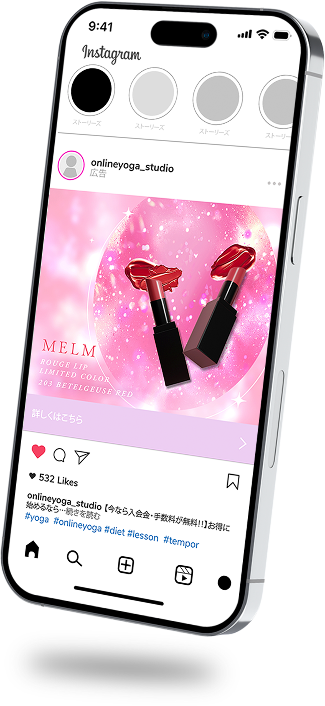
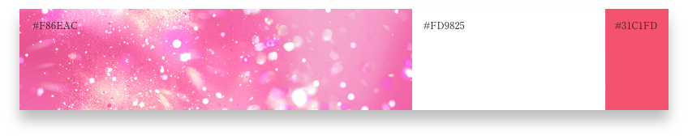

インスタグラムやXの広告バナーをテーマに、架空の期間限定色のリップの販促バナーを制作しました。キラキラで宝石のようなイメージで仕上げました。
サイズ
900 × 750px
ターゲット
InstagramやXで美容関連のフォローがメインの10～20代女性
目的
新発売の期間限定色リップのセールス
デザイン
ターゲットがリップに視線が動くことを意識しラメの背景を２層に分け奥行きで立体感を出しました。女性らしいカラーと、キラキラのラメ、宇宙のようなあしらいを施し、カラーネムをイメージしたデザインに仕上げました。

制作範囲・期間
2時間
使用ツール
Photoshop